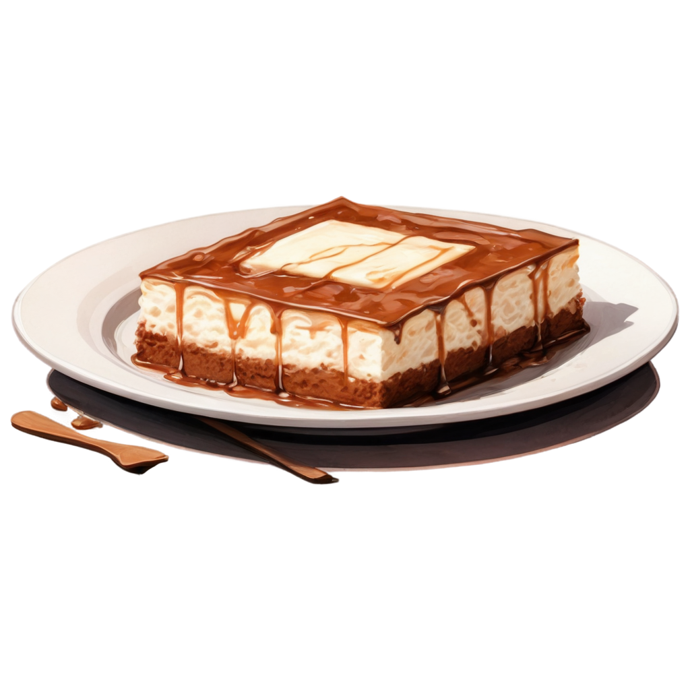

Tiramisù

The greatest dessert. It's origins are debatable but its taste can't be discussed
Ingredients (6pz)
- 400g mascarpone
- 200g savoiardi
- 150g zucchero a velo
- 200g di cioccolato fondente (43% in su)
- 4 tuorli
- 2 albumi
- 3 tazzine di caffè ristretto
- cacao amaro
Steps
- Dividere tuorli da albumi e montare questi ultimi a neve soda
- Riunire in un'altra ciotola tuorli e zucchero
- Mescolare con la frusta fino ad ottenere un composto chiaro e spumoso
- Agiiugngere delicatamente il mascarpone
- Aggingere gli albumi montati a neve
- Coprire il fondo di una teglia con savoiardi inzuppati nel caffè
- Ricoprire lo strato di savoiardi con crema al mascarpone e spolverare con un po' di cioccolato grattugiato
- Ripetere fino all'esaurimento degli ingredienti
- terminare con uno strato di mascarpone spolverizzato di cacao amaro
- Metter il dolce in frigo per circa tre ore